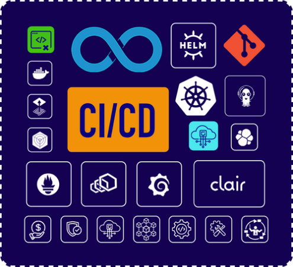

Set up CI/CD Pipelines for Kubernetes in 3 minutes!
Streamline your Kubernetes deployments using Devtron and say goodbye to writing YAML scripts.

Streamline your Kubernetes deployments using Devtron and say goodbye to writing YAML scripts.